Trei vizite într-o comună de deal
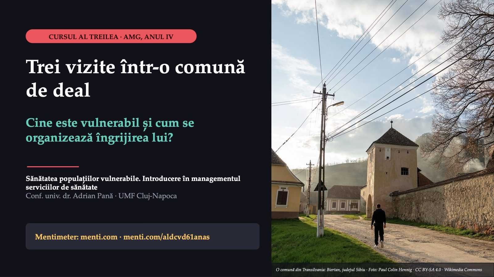
1 / 47Ce am schimbat după biletele voastre
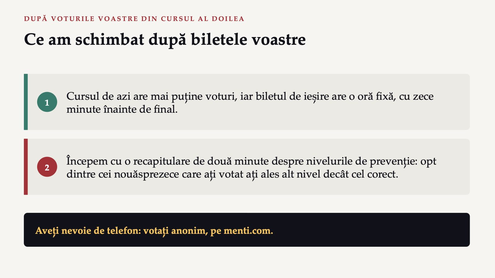
2 / 47Prima întrebare: există deja boala?
 3 / 47
3 / 47O fată de doisprezece ani este vaccinată împotriva HPV. Ce nivel de prevenție este, față de cancerul de col uterin?
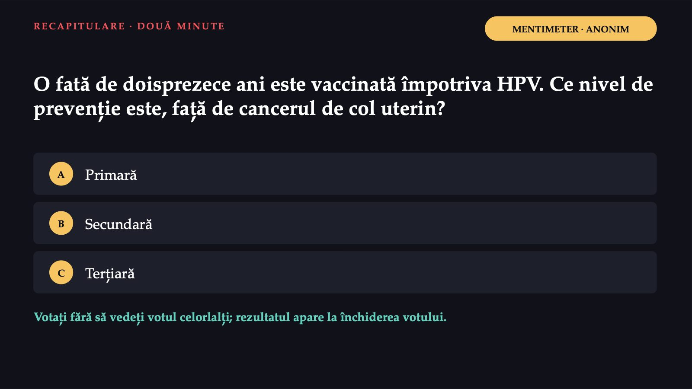
4 / 47Răspunsul apare după ședință
Răspunsul apare după ședință
Ioana, asistentă medicală comunitară
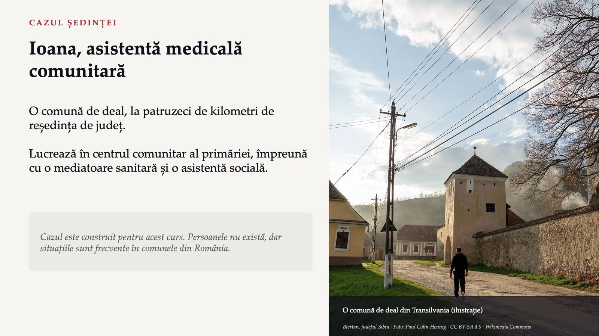
6 / 47Ce îi face mai expuși decât alți pacienți?
![AGENDA DE AZI · TREI VIZITE ÎNTREBARE CĂTRE SALĂ Ce îi face mai expuși decât alți pacienți? Doamna Elena Șaptezeci și opt de ani, singură. Hipertensiune, diabet, cinci medicamente pe zi. Andrei Doi ani, vaccinuri restante. Casă fără apă curentă; neînscris la medicul de familie. Mama lucrează cu ziua, neasigurată. Domnul Vasile Cincizeci și doi de ani, scaun cu rotile. Cabinetul are scări; autobuzul trece de două ori pe zi. Copiii sub 18 ani sunt asigurați prin lege. Ce îi expune ține de viața lor, nu de diagnostic.](diapozitive/C03/007.jpg) 7 / 47
7 / 47Dacă Ioana ar putea face astăzi o singură vizită, pe cine ați alege?
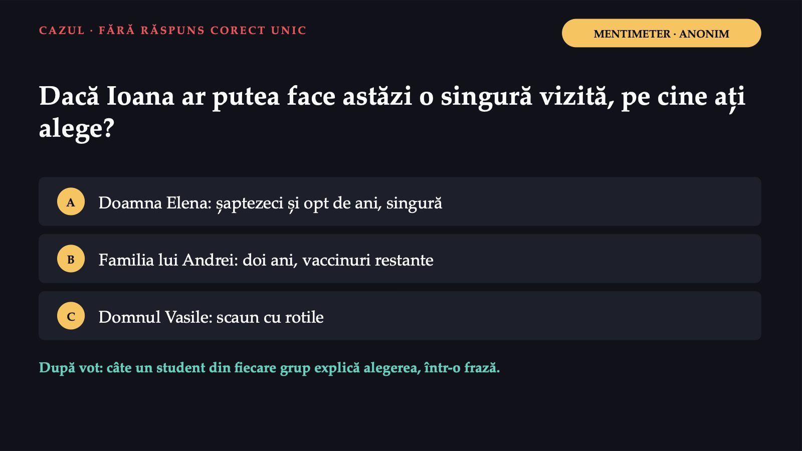
8 / 47Două părți, aceeași comună
 9 / 47
9 / 47Grupul vulnerabil
![TERMENUL NOU 1 DIN 3 LEGEA ASISTENȚEI SOCIALE NR. 292/2011, ART. 6 LIT. P) Grupul vulnerabil „Persoane sau familii care sunt în risc de a-și pierde capacitatea de satisfacere a nevoilor zilnice de trai din cauza unor situații de boală, dizabilitate, sărăcie, dependență de droguri sau de alcool ori a altor situații care conduc la vulnerabilitate economică și socială” Riscul Vulnerabil înainte ca nevoile să rămână nesatisfăcute. Cumulul Boala și dizabilitatea, în aceeași listă cu sărăcia și dependența. engl. vulnerable group · fr. groupe vulnérable](diapozitive/C03/010.jpg) 10 / 47
10 / 47Resurse, risc, rezultate
![FLASKERUD ȘI WINSLOW, DUPĂ MORANTE-GARCÍA ȘI COLAB. APLICAȚI PE CELE TREI VIZITE Resurse, risc, rezultate Resursele venitul și munca, educația, locuința și apa, sprijinul familiei, accesul la îngrijire Riscul relativ expunerile, comportamentele de risc, excluziunea și discriminarea Starea de sănătate morbiditatea și mortalitatea; dizabilitatea, calitatea vieții Cercul se închide: rezultatele slabe reduc, la rândul lor, resursele Un model folosit frecvent în literatura de nursing: intervenția poate porni din oricare punct. Sursa: Morante-García și colab., 2022 (registru A924); detaliile riscului și ale stării de sănătate: precizare didactică.](diapozitive/C03/011.jpg) 11 / 47
11 / 47Ați crede că „nu au grijă de ei”?
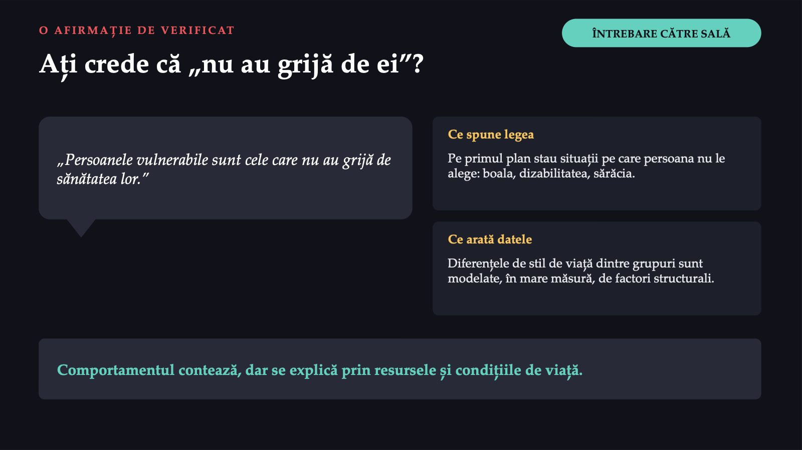
12 / 47Copiii și vârstnicii, mai expuși decât în UE
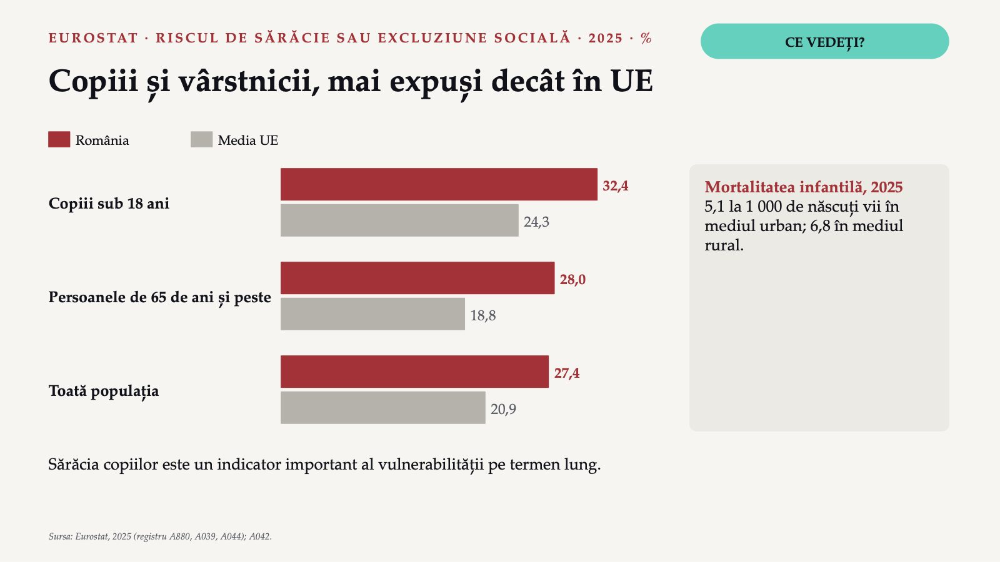
13 / 47Când scările și distanța devin bariere
![DIZABILITATEA ȘI MEDIUL RURAL Când scările și distanța devin bariere Risc de sărăcie sau excluziune socială, 16 ani și peste, 2025, % România Media UE Cu limitări severe ale activității 51,3 36,5 Fără limitări 23,2 17,7 Domnul Vasile: dizabilitatea și sărăcia se întrețin. Mediul rural Distanța, lipsa personalului și infrastructura reduc accesul. Personalul și unitățile sunt distribuite inegal între rural și urban. Sursa: Eurostat, 2025 (registru A882); Observatorul European, raportul despre România, 2026 (registru A900).](diapozitive/C03/014.jpg) 14 / 47
14 / 472,9%
![OBSERVATORUL EUROPEAN · RAPORTUL DESPRE ROMÂNIA, 2026 Romii: ce știm din surse oficiale și ce nu 2,9% s-au declarat de etnie romă (INS); ponderea reală nu este cunoscută 42% dintre romi nu aveau asigurare de sănătate (ancheta FRA din 2021, citată de raport) Raportul leagă acoperirea scăzută de sărăcia mai mare, de educația mai scăzută și de politicile de protecție slabe. Speranța de viață a romilor nu este prezentată: nu am găsit o sursă oficială care să o măsoare. Sursa: Observatorul European al Sistemelor și Politicilor de Sănătate, 2026 (registru A901).](diapozitive/C03/015.jpg) 15 / 47
15 / 47Alte grupuri, aceleași mecanisme
![ALTE GRUPURI VULNERABILE Alte grupuri, aceleași mecanisme Migranții și refugiații Limba, lipsa asigurării, traumele, statutul juridic incert. August 2026: 222 825 de beneficiari ai protecției temporare. Tulburările psihice Stigmatul, lipsa serviciilor comunitare de sănătate mintală, deficitul de specialiști, mai ales în mediul rural. Fără adăpost Frigul, violența, infecțiile, mai multe boli deodată; ajung la îngrijire adesea prin serviciul de urgență. Riscurile se adună la aceeași persoană: vârstnic, cu dizabilitate, singur, într-un sat izolat. Sursa: Eurostat (registru A883); descrierile grupurilor: sinteză didactică.](diapozitive/C03/016.jpg) 16 / 47
16 / 47Media națională ascunde diferența
 17 / 47
17 / 47Inegalitate și inechitate în sănătate
![TERMENUL NOU 2 DIN 3 DOUĂ CUVINTE CARE NU ÎNSEAMNĂ ACELAȘI LUCRU Inegalitate și inechitate în sănătate Inegalitate: descrie Orice diferență măsurabilă de stare de sănătate între persoane sau grupuri. Exemplu: femeile au un avantaj biologic de supraviețuire. Inechitate: judecă O diferență sistematică, produsă de procese sociale, deci modificabilă, și nedreaptă. Exemplu: Andrei, asigurat prin lege, nu primește vaccinurile pe care le primesc copiii din oraș. engl. health inequity · fr. iniquité en santé Sursa: registru A043, A928, A025, A909.](diapozitive/C03/018.jpg) 18 / 47
18 / 47Inechitate sau inegalitate?
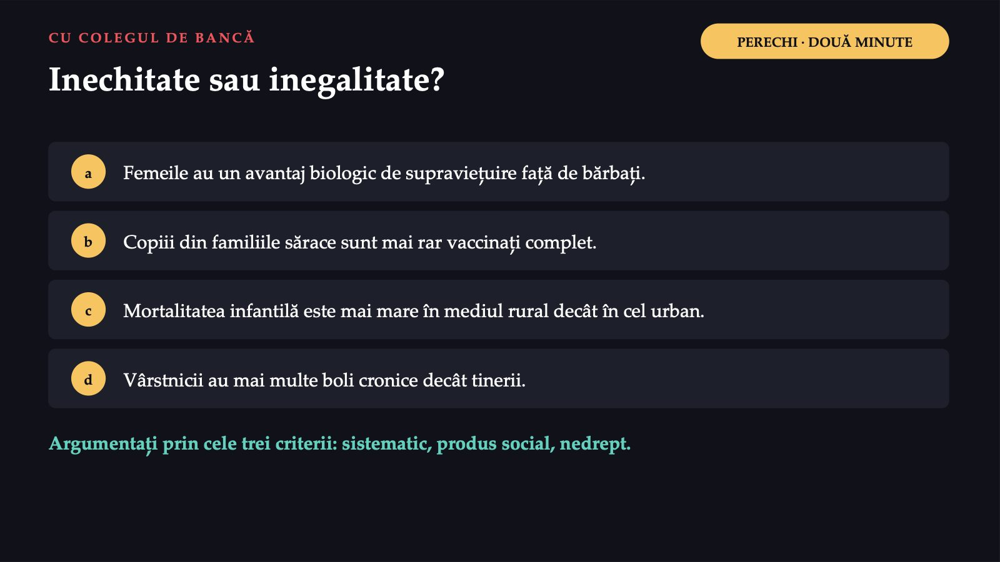
19 / 47Răspunsul apare după ședință
Răspunsul apare după ședință
Pe toată scara socială, nu doar la capăt
![GRADIENTUL SOCIAL Pe toată scara socială, nu doar la capăt poziția socială → starea de sănătate ↑ Sănătatea scade treptat, pe măsură ce scade poziția socială, pe toată scara, nu numai la grupul cel mai sărac. O sinteză recentă: o corelație între statutul social mai înalt și sănătatea mai bună, care stă la baza inechităților, în sănătatea fizică și în cea mintală. Termenul este asociat cu numele lui Michael Marmot. Sursa: Bolton, 2023 (registru A930); gradientul din datele românești: cursul întâi.](diapozitive/C03/021.jpg) 21 / 47
21 / 47Patru niveluri de acțiune
![CONVENȚIE A CURSULUI, DUPĂ LUCRĂRILE OMS RELUAȚI VOTUL Patru niveluri de acțiune Structural educația, protecția socială, locuința, „sănătatea în toate politicile” Intermediar munca decentă, alimentele accesibile, transportul public, spațiile verzi Serviciile de sănătate acoperirea universală, asistența comunitară, mediatorii, telemedicina Consecințele bolii reabilitarea, serviciile sociale, îngrijirile paliative Vizita aleasă: la ce nivel acționează? O măsură de nivel mai înalt poate avea un efect mai durabil. Asistentul lucrează mai ales la ultimele două niveluri, dar poate semnala restul: o rampă, o cursă de autobuz.](diapozitive/C03/022.jpg) 22 / 47
22 / 471 791 · 459
![ROLURILE ASISTENTULUI MEDICAL Ce face asistentul pentru populațiile vulnerabile Screeningul factorilor de risc Căutarea activă a celor greu accesibili Pledoaria pentru acces echitabil Educație adaptată cultural Managementul de caz Trimiterea și urmărirea 1 791 · 459 asistenți medicali comunitari și mediatori sanitari, în 2020, distribuiți inegal între județe Mediatorul sanitar nu înlocuiește asistentul: îi deschide ușa. Pentru Andrei: mediatoarea câștigă încrederea mamei, asistenta sprijină înscrierea la medicul de familie. Sursa: Observatorul European, raportul despre România, 2026 (registru A902); rolurile: convenție a cursului.](diapozitive/C03/023.jpg) 23 / 47
23 / 47Ce o oprește pe familia lui Andrei să ajungă la vaccin?
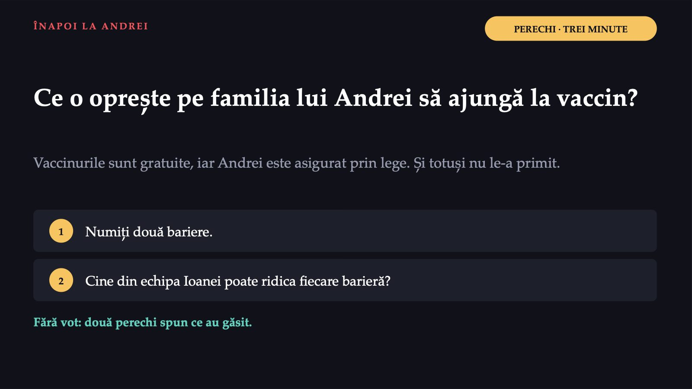
24 / 47De la cauză la efect: unde ați interveni?
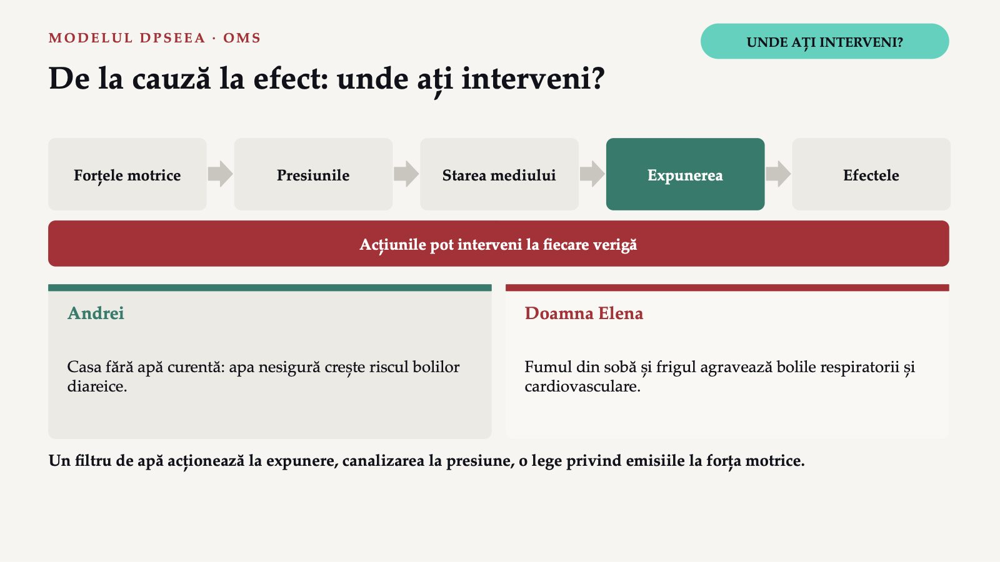
25 / 47239 000
![AGENȚIA EUROPEANĂ DE MEDIU · UE-27 · DATELE ANULUI 2022 Aerul pe care îl respirăm 239 000 de decese atribuibile particulelor fine (PM2,5) peste nivelul recomandat de OMS, de 5 µg/m³ 70 000 ozonul 48 000 dioxidul de azot 45% scăderea deceselor atribuibile particulelor fine, între 2005 și 2022; ținta pentru 2030: o reducere de cel puțin 55%. În ani de viață pierduți raportați la populație, cele mai afectate state: Bulgaria, Polonia, România. Sursa: AEM, Harm to human health from air pollution in Europe, 2024 (registru A891, A892, A893).](diapozitive/C03/026.jpg) 26 / 47
26 / 47Cine răspunde de siguranța la locul de muncă
![LEGEA NR. 319/2006 · SECURITATEA ȘI SĂNĂTATEA ÎN MUNCĂ Cine răspunde de siguranța la locul de muncă Angajatorul, art. 6 alin. (1) „Angajatorul are obligația de a asigura securitatea și sănătatea lucrătorilor în toate aspectele legate de muncă.” Lucrătorul, art. 22 Își desfășoară activitatea astfel încât să nu expună la pericol nici propria persoană, nici pe ceilalți. Fizice zgomot, radiații Chimice dezinfectante, citostatice Biologice înțepături cu ace Ergonomice mobilizarea pacienților Psihosociale ture, violență Sursa: Legea nr. 319/2006 (registru A890); cele cinci categorii: convenție a cursului. Asistentul este expus la toate.](diapozitive/C03/027.jpg) 27 / 47
27 / 47Epuizarea profesională: un fenomen ocupațional
![OMS · CLASIFICAREA INTERNAȚIONALĂ A MALADIILOR, REVIZIA A 11-A Epuizarea profesională: un fenomen ocupațional „Un sindrom conceptualizat ca rezultat al stresului cronic la locul de muncă, care nu a fost gestionat cu succes” (traducere proprie) 1 Senzația de epuizare a energiei 2 Distanțarea mentală de muncă, negativismul sau cinismul față de ea 3 Eficacitatea profesională redusă Numai în contextul profesional; clasificat ca fenomen ocupațional, nu ca afecțiune medicală. Sursa: OMS, 2019 (registru A894). Originalul: „Burn-out is a syndrome conceptualized as resulting from chronic workplace stress that has not been successfully managed.”](diapozitive/C03/028.jpg) 28 / 47
28 / 47Un risc profesional pe care l-ați întâlnit în stagiu
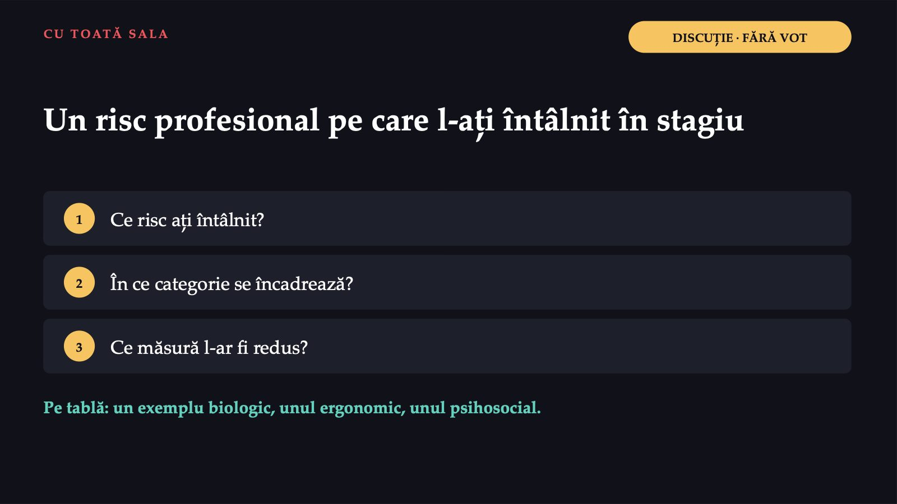
29 / 47+7%
![NUMĂRUL DE PACIENȚI PE ASISTENT ȘI MORTALITATEA Câți pacienți are un asistent: o decizie de organizare +7% șansele de deces în 30 de zile, pentru fiecare pacient în plus pe asistent (raportul șanselor 1,068) The Lancet, 2014: 422 730 de pacienți operați, de 50 de ani și peste, nouă țări. 9,6% reducerea șanselor de deces la o tură suplimentară de 12 ore a unui asistent licențiat Trei spitale englezești, 2017; fără asociere pentru personalul auxiliar. Studii observaționale: o asociere, nu o relație cauzală dovedită. Sursa: Aiken și colab., 2014 (registru A910); Zaranko și colab., 2023 (registru A931).](diapozitive/C03/030.jpg) 30 / 47
30 / 47Programele naționale de sănătate
![LEGEA NR. 95/2006, ART. 9 CUM AJUNGE VACCINUL? Programele naționale de sănătate „cadrul implementării obiectivelor politicii și strategiei sănătății publice de către Ministerul Sănătății, ca autoritate centrală a domeniului de sănătate publică” Elaborează Ministerul Sănătății, cu participarea CNAS Derulează Ministerul Sănătății și/sau CNAS, după caz Finanțează bugetul de stat, Fondul național unic de asigurări sociale de sănătate Vaccinul gratuit nu ajunge singur la Andrei: îl aduc asistenta, mediatoarea și medicul de familie.](diapozitive/C03/031.jpg) 31 / 47
31 / 47Ioana devine coordonatoare
![PARTEA A DOUA · ACELAȘI CAZ Ioana devine coordonatoare Centrul comunitar devine un centru integrat de servicii medicale și sociale. Ioana trebuie să decidă ce servicii oferă în primul an, cine face fiecare lucru, cum își motivează colegii și cum află dacă centrul își atinge scopurile. Managementul: planificarea, organizarea, conducerea și controlul activității oamenilor, împreună cu celelalte resurse, pentru atingerea obiectivelor organizației. Sursa: OpenStax, Principles of Management, 2019 (registru A911).](diapozitive/C03/032.jpg) 32 / 47
32 / 47De ce managementul în sănătate este diferit
![CONVENȚIE A CURSULUI · SINTEZĂ DIDACTICĂ De ce managementul în sănătate este diferit 1 Serviciul nu se stochează: o oră de îngrijire neutilizată este pierdută. 2 Pacientul nu poate evalua singur calitatea tehnică (asimetria de informație). 3 Cererea este greu de prevăzut; urgențele nu se programează. 4 Greșelile pot avea consecințe ireversibile. 5 Profesii cu autonomie mare trebuie să lucreze împreună. Instrumentele din industrie se adaptează, nu se copiază. Managerul este numit; liderul este acceptat.](diapozitive/C03/033.jpg) 33 / 47
33 / 47Cele patru funcții ale managementului
![CICLUL FUNCȚIILOR · OPENSTAX Cele patru funcții ale managementului ÎNTREBAREA CE FACE IOANA Planificarea Ce vrem să obținem și cum? obiectivele primului an și pașii Organizarea Cine face și cu ce resurse? împarte sarcinile, stabilește programul Conducerea Cum lucrăm împreună? motivează, comunică, deleagă Controlul Am obținut ce ne-am propus? compară rezultatele cu obiectivele și propune corecțiile Ciclul se reia: informațiile din control intră în ciclul următor de planificare. Fayol descria cinci funcții, inclusiv încadrarea cu personal. Sursa: OpenStax, 2019 (registru A911, A929, A920); exemplele Ioanei sunt construite pentru curs.](diapozitive/C03/034.jpg) 34 / 47
34 / 47Planificarea și analiza SWOT
![PLANIFICAREA PERECHI · TREI MINUTE Planificarea și analiza SWOT Strategică: conducerea de vârf: direcția de ansamblu Tactică: șefii de compartiment: acțiunile compartimentului Operațională: activitățile zilnice: turele, lista de vizite Obiectivul bun: specific, măsurabil, realizabil, relevant, încadrat în timp. Puncte tari interne · ? Puncte slabe interne · ? Oportunități externe · ? Amenințări externe · ? Cu colegul de bancă: câte un exemplu pe cadran pentru centrul Ioanei. Exersați la lucrarea practică a săptămânii.](diapozitive/C03/035.jpg) 35 / 47
35 / 47Cine face, cui raportează, cu ce resurse
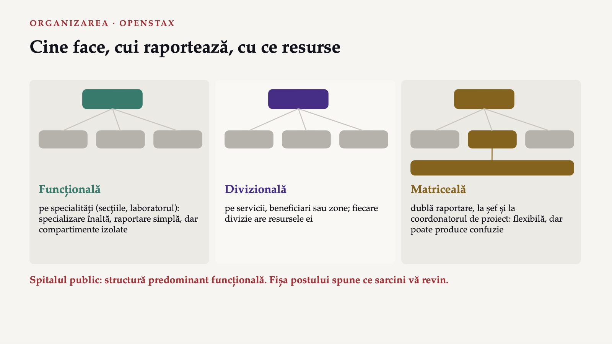
36 / 47Conducerea și controlul
![CONDUCEREA ȘI CONTROLUL · OPENSTAX Conducerea și controlul Conducerea Motivarea, comunicarea, delegarea, conflictele. Maslow: nevoile, ordonate ierarhic. Herzberg: motivatorii, legați de munca însăși, și factorii de igienă, care previn nemulțumirea. Controlul: compararea rezultatelor cu cele planificate și acțiunile de corecție. Preventiv: înainte: echipamentele, stocurile, calificarea Concurent: în timpul activității: listele de verificare la vizită Retroactiv: după: proporția lunară a copiilor vaccinați complet Sursa: OpenStax, 2019 (registru A918, A916, A929); exemplele centrului sunt construite pentru curs.](diapozitive/C03/037.jpg) 37 / 47
37 / 47După primele șase luni, numai jumătate dintre copiii planificați sunt vaccinați complet. Ioana mută o zi pe săptămână a mediatoarei pe vizite. Ce funcții a exercitat, în ordine?
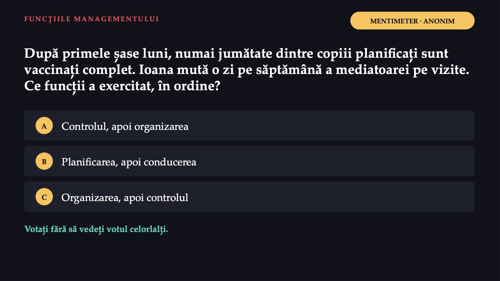
38 / 47Răspunsul apare după ședință
Răspunsul apare după ședință
Trei școli despre organizații
![TEORIILE ORGANIZAȚIONALE · OPENSTAX Trei școli despre organizații Clasică Taylor: munca organizată după reguli stabilite prin cercetare. Fayol: unitatea de comandă. Weber: birocrația, reguli fixe și merit. În sănătate: protocoalele, fișa postului. Relațiile umane Studiile Hawthorne, asociate cu Elton Mayo, deși nu el le-a început. McGregor: teoria X și teoria Y. În sănătate: motivația, echipa, climatul. Moderne Sistemul deschis: intrări, procese, ieșiri. Contingența: depinde de situație. Sistemele adaptative complexe. În sănătate: efectele neprevăzute ale schimbărilor. Sursa: OpenStax, 2019 (registru A919–A923); A905. Anii și autorii nu se evaluează.](diapozitive/C03/040.jpg) 40 / 47
40 / 4789%
![LEGEA NR. 95/2006 · OBSERVATORUL EUROPEAN, 2026 Sistemul de sănătate din România NAȚIONAL Ministerul Sănătății conduce sistemul; programele naționale INSP specialitate, în subordinea ministerului CNAS asigurările sociale; contractul-cadru ANMCS acreditează spitalele JUDEȚEAN 41 de direcții de sănătate publică și una în București; casele județene de asigurări de sănătate 89% din populație acoperită de asigurările sociale, cu pachetul complet, în 2023 Contribuția: 10% din venit. Angajatorul: 2,25%. În 2022, plățile directe ale pacienților: 21,4% din cheltuiala curentă. Sursa: Legea nr. 95/2006 (registru A895, A896, A886, A887, A889); A925, A926, A897, A898, A899, A903.](diapozitive/C03/041.jpg) 41 / 47
41 / 47Comitetul director al spitalului public
![TERMENUL NOU 3 DIN 3 LEGEA NR. 95/2006, ART. 176 ȘI 181 Comitetul director al spitalului public Spitalul public este condus de un manager. Alături de el funcționează comitetul director: Managerul spitalului Directorul medical Directorul financiar-contabil Directorul de îngrijiri, în spitalele cu peste 400 de paturi Directorul de îngrijiri: funcția prin care un asistent medical intră în conducerea spitalului. Cere un curs de management spitalicesc. engl. hospital executive board · fr. comité de direction Sursa: Legea nr. 95/2006 (registru A888); Observatorul European, 2026 (registru A904).](diapozitive/C03/042.jpg) 42 / 47
42 / 47Drumul doamnei Elena prin sistem
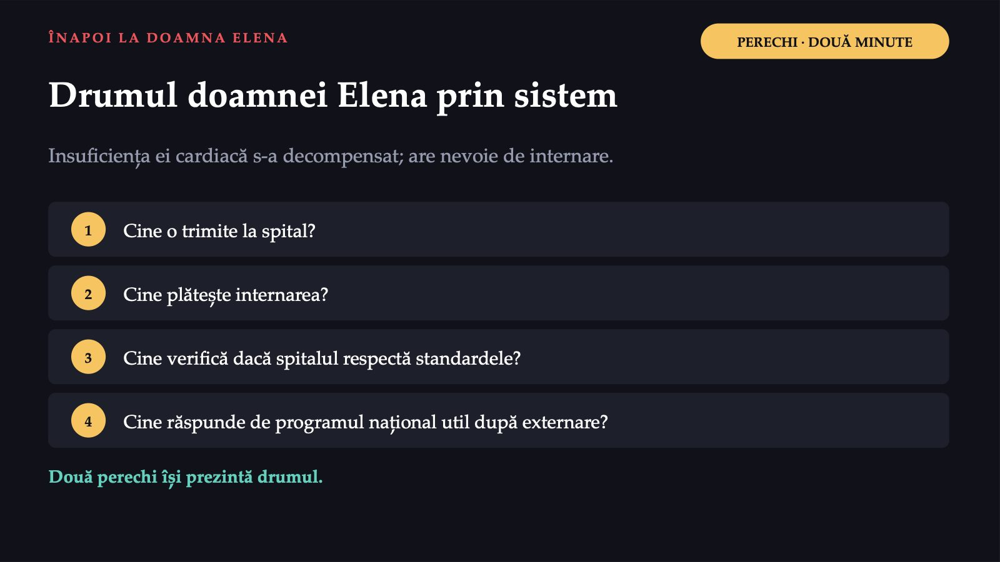
43 / 47Răspunsul apare după ședință
Răspunsul apare după ședință
Luni dimineață, în stagiu
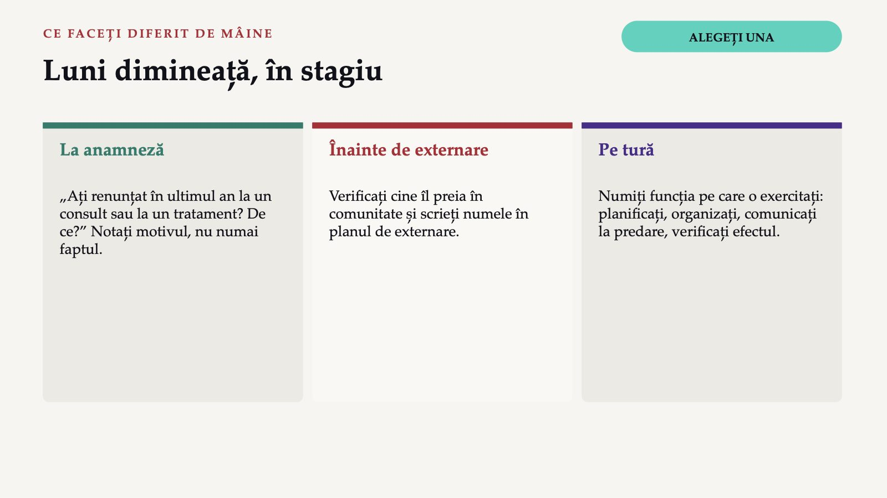
45 / 47Ce rămâne din cursul de azi
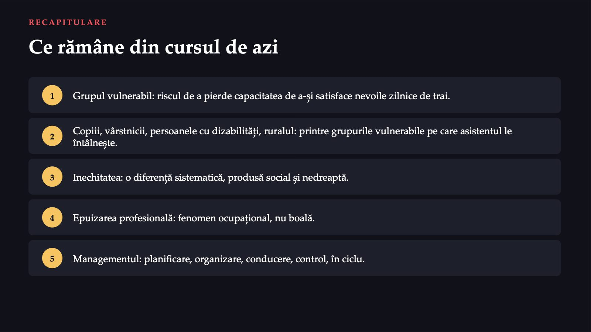
46 / 47Trei întrebări pentru final
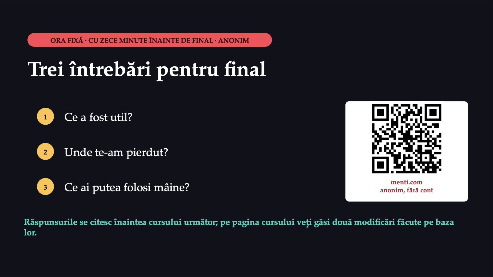
47 / 47Săgeți sau spațiu: navigare · O: vedere de ansamblu · N: notele prezentatorului · F: ecran complet · Esc: închidere